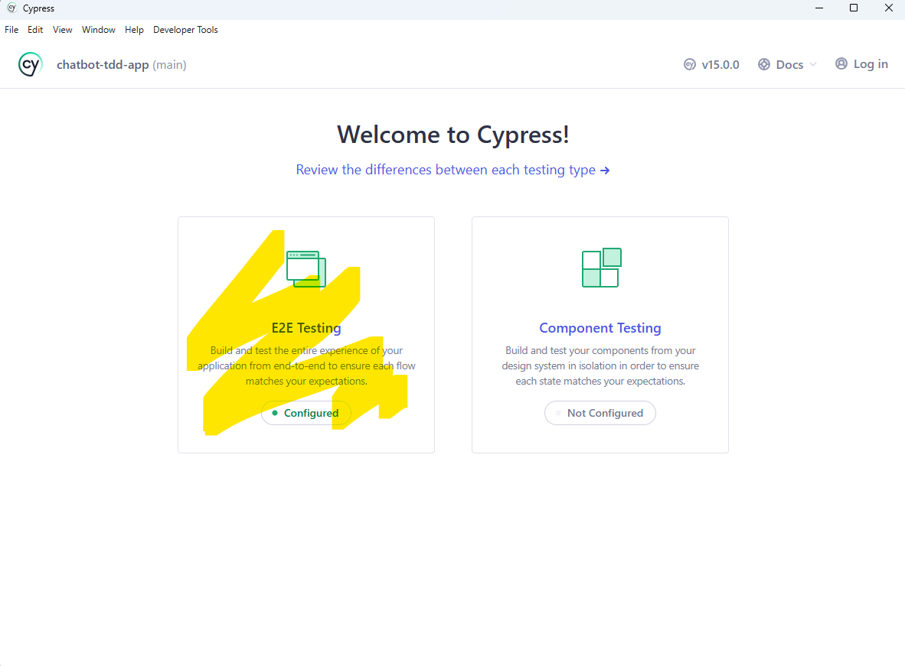
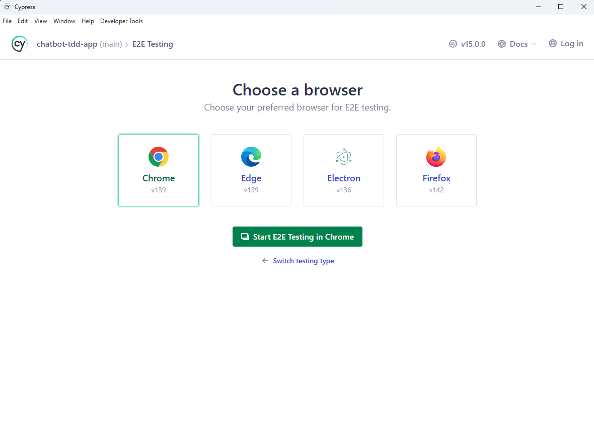

Traditional Development:
Write Code → Test Later → Debug Forever → Fear Changes
↓ ↓ ↓ ↓
Fast Stressful Time Sink Brittle Code
TDD Approach:
Write Test → Write Code → Refactor → Repeat
↓ ↓ ↓ ↓
Think Minimal Improve Confidence
By the end of this tutorial, you will:
Important for Students: Each test file in this tutorial includes a step number comment at the top:
// 🧪 Step 5: TDD Red Phase - Message Utils Test
// � Step 6: TDD Strategies - Triangulation
// �📠Step 7: Message Types Test (Inside-Out Approach)
// 🤖 Step 8: Bot Response Logic
// 🪠Step 9: Message Creation Hook
// 📄 Step 10: Message Component Tests
// ⌨️ Step 11: Chat Input Component Tests
// 💬 Step 12: Main Chat Component Tests
Why This Helps:
Step Number Legend:
Test-Driven Development (TDD) is a software development process where you write tests before writing the actual code. It's not just about testing—it's a design methodology that helps you build better, more maintainable software.
Traditional Approach Problems:
TDD Benefits:
🔴 RED: Write a Failing Test
🟢 GREEN: Make It Pass
🔵 REFACTOR: Improve the Code
Use this checklist to track your progress:
Phase 1: Setup (Steps 1-4)
Phase 2: TDD Fundamentals (Steps 5-6)
Phase 3: Core Logic (Steps 7-9)
Phase 4: React Components (Steps 10-13)
Phase 5: Advanced Testing (Steps 14-16)
Before starting, ensure you have completed Week 02-04 or have Node.js installed.
Code 1.1: Project Setup Commands
# Navigate to the TDD directory
cd "week02\code05_tdd_TypeScript_vite_react"
# Create a new Vite React TypeScript project
# Select React + TypeScript
npm create vite@latest chatbot-tdd-app --template react-ts
# Navigate into the project
cd chatbot-tdd-app
# Install dependencies
npm install
Code 2.1: Testing Dependencies Installation
# Install Jest and React Testing Library (Vite doesn't include Jest by default)
npm install --save-dev @testing-library/react @testing-library/jest-dom @testing-library/user-event
# Install Jest and TypeScript support
npm install --save-dev jest ts-jest @types/jest
# Install Cypress for E2E testing
npm install --save-dev cypress
# Install additional testing utilities
npm install --save-dev jest-environment-jsdom identity-obj-proxy
Code 3.1: Update package.json Scripts
{
"scripts": {
"dev": "vite",
"build": "tsc && vite build",
"preview": "vite preview",
"test": "jest",
"test:watch": "jest --watch",
"test:coverage": "jest --coverage",
"test:e2e": "cypress open",
"test:e2e:headless": "cypress run"
}
}
Code 3.2: Create jest.config.js
See "extra readings"
// Jest configuration for React TypeScript project
export default {
// Use ts-jest preset for TypeScript support
preset: 'ts-jest',
// Use jsdom to simulate browser environment for React components
testEnvironment: 'jsdom',
// Run setup file after Jest environment is set up
setupFilesAfterEnv: ['<rootDir>/src/setupTests.ts'],
// Mock CSS imports so tests don't break on style imports
moduleNameMapper: {
'\\.(css|less|scss|sass)$': 'identity-obj-proxy',
},
// Transform TypeScript and TSX files using ts-jest
transform: {
'^.+\\.tsx?$': 'ts-jest',
},
// Define where Jest should look for test files
testMatch: [
'<rootDir>/src/**/__tests__/**/*.{ts,tsx}', // Tests in __tests__ folders
'<rootDir>/src/**/*.{test,spec}.{ts,tsx}', // Files ending with .test or .spec
],
// Collect coverage from these files
collectCoverageFrom: [
'src/**/*.{ts,tsx}', // Include all TypeScript files
'!src/**/*.d.ts', // Exclude type definition files
'!src/main.tsx', // Exclude entry point
'!src/vite-env.d.ts', // Exclude Vite environment types
],
};
🤔 Why Do We Need jest.config.js? - Essential Understanding
You might wonder: "Why can't we just run npm test and have everything work automatically?" Great question! Here's why we need this configuration file:
🯠The Problem:
Vite projects are optimized for modern web development, but Jest (our testing framework) was designed before some of these modern tools existed. They speak different "languages":
🏗️ Vite Project Speaks:
├── TypeScript (.ts/.tsx files)
├── Modern ES Modules (import/export)
├── CSS/SCSS imports
├── JSX syntax
└── Browser environment
🧪 Jest Speaks:
├── JavaScript by default
├── CommonJS modules (require/module.exports)
├── Node.js environment
└── No built-in JSX understanding
🔧 What jest.config.js Does - Breaking It Down:
Think of jest.config.js as a "translator" that helps Jest understand your modern Vite project:
1. TypeScript Support (preset: 'ts-jest'):
// Without this: Jest sees .ts files and says "I don't understand this!"
// With this: Jest uses ts-jest to convert TypeScript → JavaScript before testing
preset: 'ts-jest' // Tells Jest: "Use the ts-jest translator for TypeScript files"
2. Browser Environment Simulation (testEnvironment: 'jsdom'):
// Problem: React components expect a browser (DOM, window, document)
// Reality: Jest runs in Node.js (no DOM, no window)
testEnvironment: 'jsdom' // Creates a fake browser environment for testing
3. CSS Import Handling (moduleNameMapper):
// Your components do this:
import './Button.css'; // Jest says: "What's a .css file?!"
// This fixes it:
moduleNameMapper: {
'\\.(css|less|scss|sass)$': 'identity-obj-proxy' // "Fake" CSS imports for testing
}
4. File Transformation (transform):
// Jest needs to know: "How do I process .tsx files?"
transform: {
'^.+\\.tsx?$': 'ts-jest' // "Use ts-jest to handle any .ts or .tsx file"
}
5. Test Discovery (testMatch):
// Jest asks: "Where are the test files?"
testMatch: [
'<rootDir>/src/**/__tests__/**/*.{ts,tsx}', // Look in __tests__ folders
'<rootDir>/src/**/*.{test,spec}.{ts,tsx}' // Look for .test.ts files
]
🔠Real-World Analogy:
Imagine you're a Spanish speaker visiting Japan:
🇪🇸 You (Vite Project):
- Speak Spanish (TypeScript)
- Use Spanish customs (ES Modules)
- Expect Spanish environment (Browser)
🇯🇵 Local System (Jest):
- Understands Japanese (JavaScript)
- Uses Japanese customs (CommonJS)
- Operates in Japanese context (Node.js)
📖 jest.config.js = Your Translator:
- Converts your Spanish → Japanese
- Explains your customs to locals
- Helps you navigate the environment
🚨 What Happens Without jest.config.js:
# You run: npm test
# Jest tries to run your tests but...
⌠"Cannot understand TypeScript files"
⌠"Don't know what import/export means"
⌠"CSS files crash the tests"
⌠"JSX syntax is foreign to me"
⌠"No browser environment available"
Result: Tests fail before they even start! 😱
✅ With jest.config.js:
# You run: npm test
# Jest reads the config file and...
✅ "I'll use ts-jest to handle TypeScript"
✅ "I'll convert ES modules to CommonJS"
✅ "I'll mock CSS imports so they don't break"
✅ "I'll process JSX through the TypeScript compiler"
✅ "I'll create a fake browser environment"
Result: Tests run smoothly! 🎉
💡 Key Insight:
jest.config.js bridges the gap between modern development tools and testing frameworks. It's like having a universal adapter that makes incompatible systems work together perfectly.
🯠The Bottom Line:
Without this file, you'd spend hours troubleshooting why your tests won't even start. With it, Jest becomes a powerful ally that understands your modern React TypeScript project and helps you build confidence through testing.
Code 3.2.1: Create tsconfig.jest.json
{
"extends": "./tsconfig.app.json",
"compilerOptions": {
"jsx": "react-jsx",
"esModuleInterop": true,
"allowSyntheticDefaultImports": true,
"module": "commonjs",
"verbatimModuleSyntax": false,
"noEmit": false,
"isolatedModules": false
},
"include": [
"src/**/*",
"src/**/*.test.ts",
"src/**/*.test.tsx",
"src/**/*.spec.ts",
"src/**/*.spec.tsx"
]
}
🤔 Why Do We Need tsconfig.jest.json? - Advanced Configuration Understanding
You might notice that we have both jest.config.js AND tsconfig.jest.json. Why two configuration files? Here's the deeper technical reasoning:
🯠The Core Problem:
Your main TypeScript configuration (tsconfig.app.json) is optimized for modern web bundling with Vite, but Jest needs different TypeScript settings to run tests properly in a Node.js environment.
🏗️ Production Build (tsconfig.app.json):
├── Target: Modern browsers
├── Module system: ESNext (import/export)
├── JSX: react-jsx (optimized)
├── Strict syntax: verbatimModuleSyntax: true
├── No emit: true (bundler handles output)
└── Environment: Browser
🧪 Testing Environment (tsconfig.jest.json):
├── Target: Node.js test runner
├── Module system: CommonJS (require/exports)
├── JSX: react-jsx (for test components)
├── Flexible syntax: verbatimModuleSyntax: false
├── Allow emit: false (ts-jest handles compilation)
└── Environment: Node.js with jsdom simulation
🔧 Breaking Down Each Configuration Setting:
1. Configuration Inheritance (extends):
"extends": "./tsconfig.app.json" // Start with your app config as base
This means: "Take all the settings from my main app config, then override specific ones for testing."
2. Module System Compatibility (module: "commonjs"):
// Your app uses:
import { useState } from 'react'; // ESNext modules (modern)
// Jest needs:
const { useState } = require('react'); // CommonJS modules (Node.js)
"module": "commonjs" // Tells TypeScript: "Convert imports to require() for Jest"
3. Import/Export Flexibility (verbatimModuleSyntax: false):
// Your main app has strict module syntax:
"verbatimModuleSyntax": true // Every import must be exactly what you mean
// Tests need flexibility:
"verbatimModuleSyntax": false // Allow mixed import styles for testing utilities
4. Isolated Module Processing (isolatedModules: false):
// Production build:
"isolatedModules": true // Each file must be compilable independently
// Testing environment:
"isolatedModules": false // Allow more flexible cross-file dependencies for test utilities
5. TypeScript Compilation Control (noEmit: false):
// Production (Vite handles compilation):
"noEmit": true // Don't output compiled JavaScript
// Testing (ts-jest needs compilation):
"noEmit": false // Allow TypeScript compilation for test processing
🔠Real-World Problem This Solves:
Without tsconfig.jest.json, you'd encounter these specific errors:
# Error 1: JSX Processing
⌠error TS6142: Module './Component' was resolved to 'Component.tsx', but '--jsx' is not set.
# Error 2: Module System Mismatch
⌠error TS1371: This import is never used as a value and must use 'import type'.
# Error 3: Strict Module Syntax
⌠error TS1484: 'SomeType' is a type and must be imported using a type-only import when 'verbatimModuleSyntax' is enabled.
# Error 4: Compilation Issues
⌠Cannot use JSX unless the '--jsx' flag is provided.
✅ With tsconfig.jest.json:
✅ Jest can process .tsx files correctly
✅ TypeScript understands both import styles
✅ Module system matches Node.js expectations
✅ Test utilities work seamlessly
✅ All tests run without TypeScript conflicts
🯠How Jest Uses This File:
// In jest.config.js:
transform: {
'^.+\\.tsx?$': ['ts-jest', {
tsconfig: 'tsconfig.jest.json' // "Use THIS config for tests"
}]
}
This tells Jest: "When you encounter TypeScript files during testing, use the tsconfig.jest.json configuration to compile them."
💡 Key Architecture Insight:
This is a common pattern in modern development:
📠Project Structure:
├── tsconfig.json → Base configuration
├── tsconfig.app.json → Production build settings
├── tsconfig.jest.json → Testing environment settings
├── tsconfig.node.json → Build tools settings
└── jest.config.js → Points to tsconfig.jest.json
Each tool gets exactly the TypeScript configuration it needs without compromising the others.
🚨 What Happens Without This File:
# Jest tries to use your main TypeScript config...
# But it's optimized for browsers, not Node.js testing!
⌠Module import/export conflicts
❌ JSX processing failures
⌠Strict syntax checking breaks test utilities
⌠TypeScript compilation errors in test files
❌ Hours of debugging configuration mismatches
Result: Tests fail due to configuration, not code issues! 😱
✅ With tsconfig.jest.json:
# Jest gets its own perfectly-tuned TypeScript config
✅ Clean module resolution
✅ Proper JSX handling for test components
✅ Flexible import syntax for test utilities
✅ Seamless TypeScript compilation
✅ Focus on writing tests, not fighting config
Result: Tests run smoothly, developers stay productive! 🎉
🯠The Professional Takeaway:
Separating TypeScript configurations by environment is a professional development practice. It ensures that each tool (bundler, testing framework, build scripts) gets the exact configuration it needs without interference from other tools.
Code 3.3: Create setupTests.ts
// Import Jest DOM matchers for enhanced testing assertions
// This adds custom matchers like toBeInTheDocument(), toHaveClass(), etc.
import '@testing-library/jest-dom';
// Global mock for scrollIntoView - jsdom doesn't implement this browser API
// This prevents errors when components use scrollIntoView (like our Chat component will)
Object.defineProperty(Element.prototype, 'scrollIntoView', {
value: jest.fn(),
writable: true,
});
Why do we need setupTests.ts? - Detailed Explanation
The setupTests.ts file is a special configuration file that Jest automatically loads before running any tests. Think of it as the "preparation room" that gets everything ready for your tests to run smoothly.
🯠The Problem It Solves:
Imagine you're testing React components. By default, Jest comes with basic testing capabilities, but when testing web components, you need extra tools to check things like:
🔧 What setupTests.ts Does:
@testing-library/jest-dom provides additional Jest matchers specifically for DOM testing:// ⌠Without @testing-library/jest-dom - you'd have to write complex checks:
const button = screen.getByRole('button');
expect(button.parentElement?.contains(button)).toBe(true); // Hard to understand!
// ✅ With @testing-library/jest-dom - simple and readable:
const button = screen.getByRole('button');
expect(button).toBeInTheDocument(); // Clear and intuitive!
Available Enhanced Matchers:
toBeInTheDocument() - checks if element exists in DOMtoHaveClass('my-class') - checks if element has specific CSS classtoHaveAttribute('href', '/link') - checks element attributestoBeDisabled() - checks if form elements are disabledtoBeVisible() - checks if element is visible to userstoHaveTextContent('Hello') - checks element's text contenttoHaveValue('input value') - checks form input valuesscrollIntoView because:// The Problem: React components often use browser APIs
const scrollToBottom = () => {
messagesEndRef.current?.scrollIntoView({ behavior: 'smooth' });
};
// But jsdom (testing environment) doesn't implement all browser APIs
// Without the mock: TypeError: scrollIntoView is not a function
// With the mock: Tests run smoothly! ✅
// Example of what you might add to setupTests.ts:
// Import the enhanced matchers
import '@testing-library/jest-dom';
// Set up fake timers for all tests (if needed)
beforeEach(() => {
jest.useFakeTimers();
});
// Clean up after each test
afterEach(() => {
jest.useRealTimers();
// Clear any mocks
jest.clearAllMocks();
});
// Mock setup (like our fetch mocks for API calls)
// Global configurations
// Custom matchers or utilities
// ⌠Without setupTests.ts - TypeScript Error:
expect(button).toBeInTheDocument();
// Error: Property 'toBeInTheDocument' does not exist on type 'Assertion'
// ✅ With setupTests.ts - TypeScript knows about the new matchers:
expect(button).toBeInTheDocument(); // ✓ Works perfectly!
🚨 What Happens Without This File:
// You'd be stuck with basic assertions like:
expect(element.className).toContain('active'); // Less readable
// Instead of:
expect(element).toHaveClass('active'); // Much clearer!
TypeScript Errors: Assertions like expect(element).toBeInTheDocument() would fail with TypeScript errors
Repetitive Setup Code: You'd have to import and configure testing utilities in every test file
🯠Real-World Example:
Let's say you're testing a login form:
// In your test file - with setupTests.ts configured:
it('should show error message for invalid login', () => {
render(<LoginForm />);
const usernameInput = screen.getByLabelText('Username');
const submitButton = screen.getByRole('button', { name: 'Login' });
// These enhanced matchers make tests much more readable:
expect(usernameInput).toBeInTheDocument(); // Clear: element exists
expect(submitButton).toBeEnabled(); // Clear: button is clickable
// Submit empty form
fireEvent.click(submitButton);
const errorMessage = screen.getByText('Username is required');
expect(errorMessage).toBeVisible(); // Clear: error is shown to user
expect(errorMessage).toHaveClass('error'); // Clear: has error styling
});
🔄 How Jest Uses This File:
setupTests.ts💡 Key Takeaway:
Think of setupTests.ts as your testing toolkit's instruction manual. It tells Jest: "Hey, when you run tests, make sure you have these extra tools available!" This way, every test file in your project automatically gets access to better, more readable testing utilities without having to import them individually.
# Run the test command to ensure everything is configured
npm test
Troubleshooting Common Issues:
If you get 'jest' is not recognized error:
npm install --save-dev jest ts-jest @types/jestpackage.json has the test script: "test": "jest"npx jest instead of npm testIf you get module resolution errors:
jest.config.js is in your project rootmoduleNameMapper is correctly configured for CSS importsts-jestIf you get "Unknown option" validation warnings:
moduleNameMapping instead of moduleNameMappermoduleNameMapping: to moduleNameMapper: in jest.config.jsmoduleNameMapper (without 's' at the end)If you get "No tests found" (this is expected at this stage):
npm test -- --passWithNoTests to verify Jest configuration is workingLet's start with a simple example to understand the TDD cycle.
🔴 RED: Write the failing test first
Code 5.1: Create messageUtils.test.ts
// 🧪 Step 5: TDD Red Phase - Message Utils Test
// Import the function we want to test (doesn't exist yet - this will fail)
import { formatMessage } from '../messageUtils';
// Describe block groups related tests together
describe('formatMessage', () => {
// Individual test case using 'it' function
it('should format a simple message', () => {
// Arrange: Set up test data
const text = 'Hello World'; // Message text to format
const sender = 'user'; // Who sent the message
// Act: Call the function we're testing
const result = formatMessage(text, sender);
// Assert: Check that the result matches our expectations
expect(result).toEqual({
text: 'Hello World', // Should preserve original text
sender: 'user', // Should preserve sender
timestamp: expect.any(Date), // Should have a Date (any Date is fine)
id: expect.any(String) // Should have a string ID (any string is fine)
});
});
});
Run the test - it should FAIL:
npm test
# Error: Cannot find module '../messageUtils'
🟢 GREEN: Write minimal code to make it pass
Code 5.2: Create messageUtils.ts
// 🧪 Step 5: Message Utils Implementation (GREEN Phase)
// Define the TypeScript interface for our formatted message
export interface FormattedMessage {
text: string; // The message content
sender: string; // Who sent it ('user' or 'bot')
timestamp: Date; // When it was created
id: string; // Unique identifier
}
// Function to format a message with metadata
export function formatMessage(text: string, sender: string): FormattedMessage {
return {
text, // Keep original text
sender, // Keep original sender
timestamp: new Date(), // Add current timestamp
id: Math.random().toString(36) // Generate simple random ID
};
}
Run the test - it should PASS:
npm test
# ✓ should format a simple message
🔵 REFACTOR: Improve the code - Detailed Explanation
Now that our test is passing, we can safely improve the code quality without fear of breaking anything. This is the beauty of TDD - the test acts as a safety net!
🤔 What's Wrong with Our Current Code?
// Current code - works but has problems:
id: Math.random().toString(36) // Generates IDs like: "0.abc123"
Problems:
✨ Let's Make It Better:
// Improved function with better ID generation
export function formatMessage(text: string, sender: string): FormattedMessage {
return {
text, // Keep original text
sender, // Keep original sender
timestamp: new Date(), // Add current timestamp
id: `${Date.now()}-${Math.random().toString(36).substr(2, 9)}` // Better ID: timestamp + random string
};
}
📋 Complete Final Code for messageUtils.ts:
// 🔧 Step 6: Message Utils Implementation (After TDD Refactor)
// Define the TypeScript interface for our formatted message
export interface FormattedMessage {
text: string; // The message content
sender: string; // Who sent it ('user' or 'bot')
timestamp: Date; // When it was created
id: string; // Unique identifier
}
// Improved function with better ID generation
export function formatMessage(text: string, sender: string): FormattedMessage {
return {
text, // Keep original text
sender, // Keep original sender
timestamp: new Date(), // Add current timestamp
id: `${Date.now()}-${Math.random().toString(36).substr(2, 9)}` // Better ID: timestamp + random string
};
}
**🔍 Breaking Down the Improved ID Generation:**
```typescript
// Let's understand this piece by piece:
`${Date.now()}-${Math.random().toString(36).substr(2, 9)}`
// Part 1: Date.now()
Date.now() // Returns: 1693737600000 (current timestamp in milliseconds)
// Part 2: Math.random().toString(36).substr(2, 9)
Math.random() // Returns: 0.abc123def456 (random decimal)
.toString(36) // Converts to: "0.abc123def456" (base 36: 0-9, a-z)
.substr(2, 9) // Extracts: "abc123def" (skip "0.", take 9 chars)
// Combined result:
"1693737600000-abc123def" // Timestamp + dash + random string
🯠Why This is Better:
🧪 The Refactor Safety Check:
npm test
# ✓ should format a simple message
✅ Test still passes! This confirms our refactor didn't break existing functionality.
💡 Key Refactor Principle:
"Make the code better while keeping the exact same behavior"
The test ensures we didn't accidentally:
1. Faking It: Start with the simplest implementation, even hardcoded values.
2. Obvious Implementation: If the solution is clear, implement it directly.
3. Triangulation: Add more tests to drive out generalization.
Let's add more tests to triangulate:
// Test suite for formatMessage function with multiple test cases
describe('formatMessage', () => {
// Test 1: Basic functionality
it('should format a simple message', () => {
const text = 'Hello World';
const sender = 'user';
const result = formatMessage(text, sender);
// Verify all expected properties are present and correct
expect(result).toEqual({
text: 'Hello World', // Text should be preserved exactly
sender: 'user', // Sender should be preserved exactly
timestamp: expect.any(Date), // Should have a timestamp (any Date)
id: expect.any(String) // Should have an ID (any string)
});
});
// Test 2: Different sender type (triangulation)
it('should format bot messages differently', () => {
const text = 'How can I help?';
const sender = 'bot'; // Testing with 'bot' instead of 'user'
const result = formatMessage(text, sender);
// Check specific properties individually
expect(result.sender).toBe('bot'); // Should preserve 'bot' sender
expect(result.text).toBe('How can I help?'); // Should preserve bot text
});
// Test 3: Uniqueness requirement (triangulation)
it('should generate unique IDs for each message', () => {
// Create two messages with same content
const message1 = formatMessage('First', 'user');
const message2 = formatMessage('Second', 'user');
// IDs should be different even for similar messages
expect(message1.id).not.toBe(message2.id);
});
});
Now let's build our chatbot application using TDD. We'll start with the smallest pieces and build up.
🔴 RED: Test the Message interface
Code 7.1: Create Message.test.ts
// 📠Step 7: Message Types Test (Inside-Out Approach)
// Import the types and functions we want to test
import { Message, isValidMessage } from '../Message';
// Test suite for Message type and validation
describe('Message', () => {
// Test 1: Valid message should pass validation
it('should validate a correct message', () => {
// Create a properly formatted message object
const message: Message = {
id: 'test-id', // Unique identifier
text: 'Hello', // Message content
sender: 'user', // Must be 'user' or 'bot'
timestamp: new Date() // Creation time
};
// Should return true for valid message
expect(isValidMessage(message)).toBe(true);
});
// Test 2: Invalid message with empty text should fail
it('should reject message with empty text', () => {
// Create message with empty text (invalid)
const message = {
id: 'test-id',
text: '', // Empty text should be invalid
sender: 'user',
timestamp: new Date()
};
// Should return false for invalid message
expect(isValidMessage(message)).toBe(false);
});
// Test 3: Invalid sender should fail validation
it('should reject message with invalid sender', () => {
// Create message with invalid sender
const message = {
id: 'test-id',
text: 'Hello',
sender: 'invalid', // Not 'user' or 'bot' - invalid
timestamp: new Date()
};
// Should return false for invalid sender
expect(isValidMessage(message)).toBe(false);
});
});
🟢 GREEN: Implement the Message type
Create src/types/Message.ts:
// 📠Step 7: Message Types Implementation (GREEN Phase)
// Define the TypeScript interface for a chat message
export interface Message {
id: string; // Unique identifier for the message
text: string; // The actual message content
sender: 'user' | 'bot'; // Union type: only 'user' or 'bot' allowed
timestamp: Date; // When the message was created
}
// Type guard function to validate if an object is a valid Message
export function isValidMessage(message: any): message is Message {
return (
typeof message === 'object' && // Must be an object
typeof message.id === 'string' && // ID must be string
typeof message.text === 'string' && // Text must be string
message.text.length > 0 && // Text cannot be empty
(message.sender === 'user' || message.sender === 'bot') && // Sender must be 'user' or 'bot'
message.timestamp instanceof Date // Timestamp must be Date object
);
}
Create: src/services/__tests__/botService.test.ts
🔴 RED: Test the bot response function
Create src/services/__tests__/botService.test.ts:
// 🤖 Step 8: Bot Response Logic Tests
// Import the function we want to test
import { getBotResponse } from '../botService';
// Test suite for bot response service
describe('botService', () => {
// Nested describe for organizing getBotResponse tests
describe('getBotResponse', () => {
// Test 1: Bot should respond to "hello"
it('should respond to hello', () => {
const response = getBotResponse('hello');
// Response text should contain "Hello" (case-insensitive check)
expect(response.text).toContain('Hello');
});
// Test 2: Bot should respond to "hi" similarly
it('should respond to hi', () => {
const response = getBotResponse('hi');
// Both "hello" and "hi" should get Hello response
expect(response.text).toContain('Hello');
});
// Test 3: Bot should handle different cases
it('should be case insensitive', () => {
const response = getBotResponse('HELLO'); // Test uppercase input
// Should still respond with Hello regardless of input case
expect(response.text).toContain('Hello');
});
// Test 4: Bot should respond to vite-related questions
it('should respond to vite questions', () => {
const response = getBotResponse('tell me about vite');
// Response should mention vite (convert to lowercase for case-insensitive check)
expect(response.text.toLowerCase()).toContain('vite');
});
// Test 5: Bot should have default response for unknown inputs
it('should have a default response for unknown inputs', () => {
const response = getBotResponse('xyz123'); // Random input
// Should have some response (not empty)
expect(response.text).toBeDefined();
expect(response.text.length).toBeGreaterThan(0);
});
// Test 6: Response should include delay for realistic chat experience
it('should return response with delay', () => {
const response = getBotResponse('hello');
// Delay should be reasonable (> 0 but < 3 seconds)
expect(response.delay).toBeGreaterThan(0);
expect(response.delay).toBeLessThan(3000);
});
});
});
🟢 GREEN: Implement the bot service
Create src/services/botService.ts:
// 🤖 Step 8: Bot Service Implementation (GREEN Phase)
// Define the interface for bot responses
export interface BotResponse {
text: string; // The response message
delay: number; // Milliseconds to wait before showing response
}
// Main function to generate bot responses based on user input
export function getBotResponse(userMessage: string): BotResponse {
// Normalize input: convert to lowercase and remove whitespace
const message = userMessage.toLowerCase().trim();
// Check for greeting keywords
if (message.includes('hello') || message.includes('hi')) {
return {
text: "Hello! I'm a TDD-built chatbot. How can I help you today?",
delay: 1000 // 1 second delay
};
}
// Check for vite-related questions
if (message.includes('vite')) {
return {
text: "Vite is amazing! ⚡ Super fast development and builds. This bot was built using TDD!",
delay: 800 // Slightly faster response
};
}
// Check for react-related questions
if (message.includes('react')) {
return {
text: "React with TypeScript is powerful! And with TDD, we build it right the first time. 🚀",
delay: 1200 // Slightly longer response
};
}
// Check for goodbye
if (message.includes('bye')) {
return {
text: "Goodbye! Thanks for trying this TDD-built chatbot! 👋",
delay: 600 // Quick goodbye
};
}
// Default response for unrecognized input
return {
text: `You said: "${userMessage}". This response was generated by TDD-tested code! ⚡`,
delay: 1000 // Standard delay
};
}
🔵 REFACTOR: Extract response patterns - Newbie-Friendly Explanation
Our tests are passing, but the current code has problems. Let's improve it!
🤔 What's Wrong with Our Current botService Code?
// Current code works but is messy:
export function getBotResponse(userMessage: string): BotResponse {
const message = userMessage.toLowerCase().trim();
// Repeated if-statements - hard to maintain
if (message.includes('hello') || message.includes('hi')) {
return { text: "Hello! I'm a TDD-built chatbot...", delay: 1000 };
}
if (message.includes('vite')) {
return { text: "Vite is amazing! ⚡...", delay: 800 };
}
if (message.includes('react')) {
return { text: "React with TypeScript...", delay: 1200 };
}
// ... more if statements
}
Problems:
✨ Let's Refactor - Step by Step:
Step 1: Extract Response Data
// Before: Responses mixed with logic
if (message.includes('hello')) {
return { text: "Hello! I'm a chatbot...", delay: 1000 };
}
// After: Separate data from logic
const responsePatterns = [
{
keywords: ['hello', 'hi'],
response: "Hello! I'm a TDD-built chatbot. How can I help you today?",
delay: 1000
}
];
Step 2: Create Data Structure
// Define structure for response patterns (makes it easier to add new responses)
interface ResponsePattern {
keywords: string[]; // Array of trigger words
response: string; // What to respond with
delay: number; // How long to wait before responding
}
// Configuration array of all possible responses (easy to maintain and extend)
const responsePatterns: ResponsePattern[] = [
{
keywords: ['hello', 'hi'], // Greeting keywords
response: "Hello! I'm a TDD-built chatbot. How can I help you today?",
delay: 1000 // 1 second delay
},
{
keywords: ['vite'], // Vite-related keywords
response: "Vite is amazing! ⚡ Super fast development and builds. This bot was built using TDD!",
delay: 800 // Faster response for tech topics
},
{
keywords: ['react'], // React-related keywords
response: "React with TypeScript is powerful! And with TDD, we build it right the first time. 🚀",
delay: 1200 // Slightly longer for detailed tech response
},
{
keywords: ['bye'], // Farewell keywords
response: "Goodbye! Thanks for trying this TDD-built chatbot! 👋",
delay: 600 // Quick goodbye
}
];
Step 3: Simplify the Logic
// Improved bot response function using pattern matching
export function getBotResponse(userMessage: string): BotResponse {
// Normalize input: convert to lowercase and remove whitespace
const message = userMessage.toLowerCase().trim();
// Find the first pattern that matches any keyword in the user message
const pattern = responsePatterns.find(p =>
p.keywords.some(keyword => message.includes(keyword)) // Check if any keyword is found
);
// If we found a matching pattern, use it
if (pattern) {
return {
text: pattern.response,
delay: pattern.delay
};
}
// Default response if no patterns match
return {
text: `You said: "${userMessage}". This response was generated by TDD-tested code! ⚡`,
delay: 1000
};
}
📋 Complete Final Code for botService.ts:
// 🤖 Step 8: Bot Service Implementation (After TDD Refactor)
// Refactored version with extracted response patterns
// Define the interface for bot responses
export interface BotResponse {
text: string; // The response message
delay: number; // Milliseconds to wait before showing response
}
// Define structure for response patterns (makes it easier to add new responses)
interface ResponsePattern {
keywords: string[]; // Array of trigger words
response: string; // What to respond with
delay: number; // How long to wait before responding
}
// Configuration array of all possible responses (easy to maintain and extend)
const responsePatterns: ResponsePattern[] = [
{
keywords: ['hello', 'hi'], // Greeting keywords
response: "Hello! I'm a TDD-built chatbot. How can I help you today?",
delay: 1000 // 1 second delay
},
{
keywords: ['vite'], // Vite-related keywords
response: "Vite is amazing! ⚡ Super fast development and builds. This bot was built using TDD!",
delay: 800 // Faster response for tech topics
},
{
keywords: ['react'], // React-related keywords
response: "React with TypeScript is powerful! And with TDD, we build it right the first time. 🚀",
delay: 1200 // Slightly longer for detailed tech response
},
{
keywords: ['bye'], // Farewell keywords
response: "Goodbye! Thanks for trying this TDD-built chatbot! 👋",
delay: 600 // Quick goodbye
}
];
// Improved bot response function using pattern matching
export function getBotResponse(userMessage: string): BotResponse {
// Normalize input: convert to lowercase and remove whitespace
const message = userMessage.toLowerCase().trim();
// Find the first pattern that matches any keyword in the user message
const pattern = responsePatterns.find(p =>
p.keywords.some(keyword => message.includes(keyword)) // Check if any keyword is found
);
// If we found a matching pattern, use it
if (pattern) {
return {
text: pattern.response,
delay: pattern.delay
};
}
// Default response if no patterns match
return {
text: `You said: "${userMessage}". This response was generated by TDD-tested code! ⚡`,
delay: 1000
};
}
🔠Understanding the New Logic:
// Let's break down this line:
const pattern = responsePatterns.find(p =>
p.keywords.some(keyword => message.includes(keyword))
);
// Step by step:
// 1. responsePatterns.find() - Look through all patterns
// 2. p.keywords.some() - Check if ANY keyword in the pattern matches
// 3. message.includes(keyword) - Does user message contain this keyword?
// 4. Returns first matching pattern or undefined
🯠Why This Refactor is Amazing:
1. Easy to Add New Responses:
// Just add to the array - no code changes needed!
{
keywords: ['typescript', 'ts'],
response: "TypeScript adds type safety to JavaScript! 🔒",
delay: 900
}
2. Easy to Modify Existing Responses:
// Change just the data, not the logic
{
keywords: ['hello', 'hi', 'hey', 'greetings'], // Add more keywords
response: "Hello there! 👋", // Update response
delay: 500 // Change delay
}
3. Testable Separately:
// Can test data separately from logic
expect(responsePatterns[0].keywords).toContain('hello');
expect(responsePatterns[0].delay).toBe(1000);
4. No Code Duplication:
🧪 Verify Our Refactor:
npm test
# ✓ All tests still pass!
💡 Key Takeaway:
"Separate data from logic" - Store configuration in arrays/objects, keep logic generic
This makes code:
🤔 What is a Hook?
A Hook in React is like a special tool that lets you "hook into" React's power. Think of it like this:
ğŸ Real-World Analogy:
🔌 What Hooks Do:
useMessages) → Bundle up complex logic for reuse💡 Why Use Custom Hooks?
⌠Without Custom Hook (messy):
// Every component that needs messages has to write this:
const [messages, setMessages] = useState([]);
const addMessage = (text, sender) => {
const newMessage = {
id: `${Date.now()}-${Math.random().toString(36).substr(2, 9)}`,
text, sender, timestamp: new Date()
};
setMessages(prev => [...prev, newMessage]);
};
// Copy this code everywhere = BAD! 😱
✅ With Custom Hook (clean):
// Just one line in any component:
const { messages, addMessage } = useMessages();
// Logic is centralized = GOOD! 🎉
🯠Benefits of Custom Hooks:
📠Hook Rules (Important!):
use (naming convention)Now let's build our custom useMessages hook using TDD!
Create: src/hooks/__tests__/useMessages.test.ts
🔴 RED: Test the custom hook
Create src/hooks/__tests__/useMessages.test.ts:
// 🪠Step 9: Message Creation Hook Tests
// Import React Testing Library utilities for testing hooks
import { renderHook, act } from '@testing-library/react';
// Import the custom hook we want to test
import { useMessages } from '../useMessages';
// Test suite for the useMessages hook
describe('useMessages', () => {
// Test 1: Check that the hook initializes with empty state
it('should initialize with empty messages', () => {
// Render the hook in isolation
const { result } = renderHook(() => useMessages());
// Assert that messages array starts empty
expect(result.current.messages).toEqual([]);
});
// Test 2: Verify we can add user messages correctly
it('should add a user message', () => {
// Render the hook
const { result } = renderHook(() => useMessages());
// Use act() to wrap state updates for proper testing
act(() => {
// Add a user message using the hook's function
result.current.addMessage('Hello', 'user');
});
// Check that one message was added
expect(result.current.messages).toHaveLength(1);
// Verify the message text is correct
expect(result.current.messages[0].text).toBe('Hello');
// Verify the sender is set correctly
expect(result.current.messages[0].sender).toBe('user');
});
// Test 3: Verify we can add bot messages correctly
it('should add a bot message', () => {
// Render the hook
const { result } = renderHook(() => useMessages());
// Add a bot message
act(() => {
result.current.addMessage('Hi there', 'bot');
});
// Verify one message was added with correct sender
expect(result.current.messages).toHaveLength(1);
expect(result.current.messages[0].sender).toBe('bot');
});
// Test 4: Ensure each message gets a unique identifier
it('should generate unique IDs for messages', () => {
// Render the hook
const { result } = renderHook(() => useMessages());
// Add two messages
act(() => {
result.current.addMessage('First', 'user');
result.current.addMessage('Second', 'user');
});
// Verify that the IDs are different (important for React keys)
expect(result.current.messages[0].id).not.toBe(result.current.messages[1].id);
});
});
🟢 GREEN: Implement the hook
Create src/hooks/useMessages.ts:
// 🪠Step 9: useMessages Hook Implementation (GREEN Phase)
// Import React's useState hook for managing component state
import { useState } from 'react';
// Import our Message type for type safety
import type { Message } from '../types/Message';
// Custom hook to manage a collection of messages
export function useMessages() {
// State to hold an array of Message objects, starting empty
const [messages, setMessages] = useState<Message[]>([]);
// Function to add a new message to the collection
const addMessage = (text: string, sender: 'user' | 'bot') => {
// Create a new message object with all required properties
const newMessage: Message = {
// Generate unique ID using timestamp + random string for React keys
id: `${Date.now()}-${Math.random().toString(36).substr(2, 9)}`,
text, // The message content
sender, // Who sent it: 'user' or 'bot'
timestamp: new Date() // When the message was created
};
// Update state by adding the new message to the end of the array
// Using spread operator to create new array (immutable update)
setMessages(prev => [...prev, newMessage]);
};
// Return the current state and functions for external components to use
return {
messages, // Current array of messages
addMessage // Function to add new messages
};
}
Now let's test our React components using React Testing Library.
Create: src/components/__tests__/MessageComponent.test.tsx
🔴 RED: Test the Message component
Create src/components/__tests__/MessageComponent.test.tsx:
// 📄 Step 10: Message Component Tests
// Import React Testing Library utilities for component testing
import { render, screen } from '@testing-library/react';
// Import the component we want to test
import { MessageComponent } from '../MessageComponent';
// Import the Message type for creating test data
import type { Message } from '../../types/Message';
// Test suite for the MessageComponent
describe('MessageComponent', () => {
// Mock data: Create a sample user message for testing
const mockUserMessage: Message = {
id: 'test-1', // Unique identifier
text: 'Hello there!', // Message content
sender: 'user', // Sender type
timestamp: new Date('2024-01-01T12:00:00Z') // Fixed timestamp for consistent testing
};
// Mock data: Create a sample bot message for testing
const mockBotMessage: Message = {
id: 'test-2', // Different ID from user message
text: 'Hi! How can I help?', // Bot response content
sender: 'bot', // Bot sender type
timestamp: new Date('2024-01-01T12:01:00Z') // One minute later
};
// Test 1: Verify user messages render with correct content and styling
it('should render user message with correct styling', () => {
// Render the component with user message data
render(<MessageComponent message={mockUserMessage} />);
// Find the rendered message text in the DOM
const messageElement = screen.getByText('Hello there!');
// Assert the message appears in the document
expect(messageElement).toBeInTheDocument();
// Assert it has the correct CSS class for user styling
expect(messageElement).toHaveClass('user-message');
});
// Test 2: Verify bot messages render with correct content and different styling
it('should render bot message with correct styling', () => {
// Render the component with bot message data
render(<MessageComponent message={mockBotMessage} />);
// Find the bot's message text
const messageElement = screen.getByText('Hi! How can I help?');
// Assert the content is rendered
expect(messageElement).toBeInTheDocument();
// Assert it has different CSS class for bot styling
expect(messageElement).toHaveClass('bot-message');
});
// Test 3: Ensure component has proper accessibility attributes for screen readers
it('should have proper accessibility attributes', () => {
// Render with user message
render(<MessageComponent message={mockUserMessage} />);
// Find element by its semantic role (list item in a chat)
const messageElement = screen.getByRole('listitem');
// Verify it has descriptive aria-label for accessibility
expect(messageElement).toHaveAttribute('aria-label', 'Message from user');
});
});
🟢 GREEN: Implement the MessageComponent
Create src/components/MessageComponent.tsx:
// 📄 Step 10: MessageComponent Implementation (GREEN Phase)
// Import React for JSX and component definition
import React from 'react';
// Import our Message type for prop validation
import type { Message } from '../types/Message';
// Define the props interface for type safety
interface MessageComponentProps {
message: Message; // The message object to display
}
// Functional component to render a single message
export function MessageComponent({ message }: MessageComponentProps): React.JSX.Element {
return (
<li
// Dynamic CSS class based on sender: 'message user-message' or 'message bot-message'
className={`message ${message.sender}-message`}
// Semantic HTML role for screen readers
role="listitem"
// Descriptive aria-label for accessibility
aria-label={`Message from ${message.sender}`}
>
{/* Display the message text content */}
{message.text}
</li>
);
}
Create: src/components/__tests__/ChatInput.test.tsx
🔴 RED: Test the ChatInput component
Create src/components/__tests__/ChatInput.test.tsx:
// ⌨️ Step 11: Chat Input Component Tests
// Import React Testing Library utilities for component testing
import { render, screen } from '@testing-library/react';
// Import userEvent for realistic user interactions (typing, clicking)
import userEvent from '@testing-library/user-event';
// Import the ChatInput component we want to test
import { ChatInput } from '../ChatInput';
// Test suite for ChatInput component - covers user input and message sending
describe('ChatInput', () => {
// Test 1: Basic rendering - verify UI elements are present
it('should render input and send button', () => {
// Create a mock function to track if onSend is called
const mockOnSend = jest.fn();
// Render the component with the mock prop
render(<ChatInput onSend={mockOnSend} />);
// Assert that the input field exists with correct placeholder
expect(screen.getByPlaceholderText(/type your message/i)).toBeInTheDocument();
// Assert that the send button exists and is accessible by screen readers
expect(screen.getByRole('button', { name: /send/i })).toBeInTheDocument();
});
// Test 2: Button click interaction - verify messages are sent when button is clicked
it('should call onSend when button is clicked', async () => {
// Set up userEvent for realistic user interactions
const user = userEvent.setup();
// Create mock function to verify callback is called correctly
const mockOnSend = jest.fn();
render(<ChatInput onSend={mockOnSend} />);
// Find the input field and send button elements
const input = screen.getByPlaceholderText(/type your message/i);
const sendButton = screen.getByRole('button', { name: /send/i });
// Simulate user typing a message
await user.type(input, 'Hello world');
// Simulate user clicking the send button
await user.click(sendButton);
// Verify that onSend was called with the correct message text
expect(mockOnSend).toHaveBeenCalledWith('Hello world');
});
// Test 3: Keyboard interaction - verify Enter key sends messages (common UX pattern)
it('should call onSend when Enter is pressed', async () => {
const user = userEvent.setup();
const mockOnSend = jest.fn();
render(<ChatInput onSend={mockOnSend} />);
// Find the input field
const input = screen.getByPlaceholderText(/type your message/i);
// Type a message
await user.type(input, 'Hello world');
// Simulate pressing Enter key (common chat interface behavior)
await user.keyboard('{Enter}');
// Verify the message was sent via keyboard shortcut
expect(mockOnSend).toHaveBeenCalledWith('Hello world');
});
// Test 4: Input clearing behavior - ensure input resets after sending
it('should clear input after sending', async () => {
const user = userEvent.setup();
const mockOnSend = jest.fn();
render(<ChatInput onSend={mockOnSend} />);
// Type assert to HTMLInputElement to access .value property
const input = screen.getByPlaceholderText(/type your message/i) as HTMLInputElement;
// Type and send a message
await user.type(input, 'Hello world');
await user.keyboard('{Enter}');
// Verify input field is cleared after sending (good UX)
expect(input.value).toBe('');
});
// Test 5: Empty message prevention - avoid sending blank messages
it('should not send empty messages', async () => {
const user = userEvent.setup();
const mockOnSend = jest.fn();
render(<ChatInput onSend={mockOnSend} />);
// Try to send without typing anything
const sendButton = screen.getByRole('button', { name: /send/i });
await user.click(sendButton);
// Verify onSend was NOT called (prevents spam/empty messages)
expect(mockOnSend).not.toHaveBeenCalled();
});
// Test 6: Button state management - disable send button when input is empty
it('should disable send button when input is empty', () => {
const mockOnSend = jest.fn();
render(<ChatInput onSend={mockOnSend} />);
// Check initial state - button should be disabled when no text
const sendButton = screen.getByRole('button', { name: /send/i });
expect(sendButton).toBeDisabled();
// This provides visual feedback to users about when they can send
});
});
🤔 Understanding ChatInput Test Patterns - Deep Dive
The ChatInput tests demonstrate several important testing concepts that are crucial for building robust React applications:
1. Mock Functions (jest.fn()):
const mockOnSend = jest.fn();
// Creates a "spy" function that:
// - Tracks if it was called
// - Records what arguments it received
// - Allows us to verify component behavior
Why use mocks? In unit testing, we want to test the ChatInput component in isolation. We don't care about what the actual onSend function does - we just want to verify that ChatInput calls it correctly.
2. User Interaction Testing:
const user = userEvent.setup();
await user.type(input, 'Hello world');
await user.click(sendButton);
Why userEvent instead of fireEvent?
fireEvent triggers events directly (artificial)userEvent simulates actual user behavior (realistic)userEvent includes focus changes, key sequences, and timing that real users experience3. Accessibility-First Testing:
screen.getByRole('button', { name: /send/i })
screen.getByPlaceholderText(/type your message/i)
Why query by role/label instead of class/id? This approach:
4. Edge Case Testing:
// Test empty input handling
expect(mockOnSend).not.toHaveBeenCalled();
// Test button disabled state
expect(sendButton).toBeDisabled();
Why test edge cases? Real users will:
5. State Verification:
const input = screen.getByPlaceholderText(/type your message/i) as HTMLInputElement;
expect(input.value).toBe('');
Why check input clearing? Good UX means:
🯠Testing Philosophy: "Test Behavior, Not Implementation"
Notice our tests focus on:
Not on:
This makes tests more valuable and less brittle!
🟢 GREEN: Implement the ChatInput component
Create src/components/ChatInput.tsx:
// ⌨️ Step 11: ChatInput Component Implementation (GREEN Phase)
import React, { useState } from 'react';
interface ChatInputProps {
onSend: (message: string) => void;
}
export function ChatInput({ onSend }: ChatInputProps): React.JSX.Element {
const [input, setInput] = useState('');
const handleSend = () => {
if (input.trim() === '') return;
onSend(input.trim());
setInput('');
};
const handleKeyPress = (event: React.KeyboardEvent<HTMLInputElement>) => {
if (event.key === 'Enter' && !event.shiftKey) {
event.preventDefault();
handleSend();
}
};
return (
<div className="input-container">
<input
type="text"
value={input}
onChange={(e) => setInput(e.target.value)}
onKeyPress={handleKeyPress}
placeholder="Type your message..."
className="user-input"
/>
<button
onClick={handleSend}
disabled={input.trim() === ''}
className="send-button"
>
Send
</button>
</div>
);
}
Create: src/components/__tests__/Chat.test.tsx
🔴 RED: Test the main Chat component
Create src/components/__tests__/Chat.test.tsx:
// 💬 Step 12: Main Chat Component Tests
import { render, screen, waitFor } from '@testing-library/react';
import userEvent from '@testing-library/user-event';
import { Chat } from '../Chat';
// Mock the bot service
jest.mock('../../services/botService', () => ({
getBotResponse: jest.fn(() => ({
text: 'Mocked bot response',
delay: 100
}))
}));
// Global mock for scrollIntoView
beforeAll(() => {
Element.prototype.scrollIntoView = jest.fn();
});
describe('Chat', () => {
it('should render welcome message only once', () => {
render(<Chat />);
const welcomeMessages = screen.getAllByText(/welcome.*TDD/i);
expect(welcomeMessages).toHaveLength(1);
});
it('should render chat container', () => {
render(<Chat />);
expect(screen.getByRole('main')).toHaveClass('chat-container');
});
it('should add user message when sent', async () => {
const user = userEvent.setup();
render(<Chat />);
const input = screen.getByPlaceholderText(/type your message/i);
await user.type(input, 'Hello');
await user.keyboard('{Enter}');
expect(screen.getByText('Hello')).toBeInTheDocument();
});
it('should add bot response after user message', async () => {
const user = userEvent.setup();
render(<Chat />);
const input = screen.getByPlaceholderText(/type your message/i);
await user.type(input, 'Hello');
await user.keyboard('{Enter}');
await waitFor(() => {
expect(screen.getByText('Mocked bot response')).toBeInTheDocument();
});
});
it('should scroll to bottom when new message is added', async () => {
const user = userEvent.setup();
render(<Chat />);
// Clear any previous calls from component mount
jest.clearAllMocks();
const input = screen.getByPlaceholderText(/type your message/i);
await user.type(input, 'Hello');
await user.keyboard('{Enter}');
expect(Element.prototype.scrollIntoView).toHaveBeenCalled();
});
});
� Common Issue: scrollIntoView Error
If you encounter errors like:
TypeError: messagesEndRef.current?.scrollIntoView is not a function
🤔 Why This Happens:
The scrollIntoView method is a browser DOM API that doesn't exist in the jsdom testing environment. When your Chat component tries to scroll to the bottom on mount (via useEffect), the test fails because scrollIntoView is undefined.
🔧 Solution: Global Mock Setup
Add this before your describe block to mock scrollIntoView for all tests:
// Import React Testing Library utilities for component testing
import { render, screen, waitFor } from '@testing-library/react';
import userEvent from '@testing-library/user-event';
import { Chat } from '../Chat';
// Mock the bot service
jest.mock('../../services/botService', () => ({
getBotResponse: jest.fn(() => ({
text: 'Mocked bot response',
delay: 100
}))
}));
// Global mock for scrollIntoView - jsdom doesn't implement this browser API
// We need this mock for ALL tests since the Chat component calls scrollToBottom on mount
beforeAll(() => {
Element.prototype.scrollIntoView = jest.fn();
});
describe('Chat', () => {
// ... rest of your tests
});
🯠Why This Works:
beforeAll() runs once before any tests in this fileElement.prototype so all DOM elements have it🔠Alternative: Individual Test Mocking
If you only want to mock for specific tests:
it('should scroll to bottom when new message is added', async () => {
const user = userEvent.setup();
render(<Chat />);
// Clear any previous calls from component mount
jest.clearAllMocks();
// Your test code here...
expect(Element.prototype.scrollIntoView).toHaveBeenCalled();
});
💡 Key Lesson:
When testing components that use browser APIs (like scrollIntoView, localStorage, fetch), you need to mock them because the testing environment (jsdom) doesn't implement all browser features.
�🟢 GREEN: Implement the Chat component
Create src/components/Chat.tsx:
// 💬 Step 12: Chat Component Implementation (FIXED)
import React, { useEffect, useRef } from 'react';
import { useMessages } from '../hooks/useMessages';
import { getBotResponse } from '../services/botService';
import { MessageComponent } from './MessageComponent';
import { ChatInput } from './ChatInput';
export function Chat(): React.JSX.Element {
const { messages, addMessage } = useMessages();
const messagesEndRef = useRef<HTMLDivElement>(null);
const isInitialized = useRef(false); // ✅ Track if welcome message was added
const scrollToBottom = () => {
messagesEndRef.current?.scrollIntoView({ behavior: 'smooth' });
};
useEffect(() => {
scrollToBottom();
}, [messages]);
// ✅ FIXED: Use useRef to prevent duplicate welcome messages in StrictMode
useEffect(() => {
if (!isInitialized.current) {
addMessage(
"Welcome! I'm a chatbot built with TDD. Try typing 'hello', 'vite', or 'react'!",
'bot'
);
isInitialized.current = true;
}
}, [addMessage]);
const handleSendMessage = (text: string) => {
// Add user message immediately
addMessage(text, 'user');
// Get bot response and add it after delay
const botResponse = getBotResponse(text);
setTimeout(() => {
addMessage(botResponse.text, 'bot');
}, botResponse.delay);
};
return (
<main className="chat-container" role="main">
<div className="chat-messages">
<ul role="log" aria-label="Chat messages">
{messages.map((message) => (
<MessageComponent key={message.id} message={message} />
))}
</ul>
<div ref={messagesEndRef} />
</div>
<ChatInput onSend={handleSendMessage} />
</main>
);
}
🚨 Common Issue: Duplicate Welcome Messages
If you see two welcome messages when you run your app, this is due to React StrictMode in development. Here's why and how we fixed it:
// This approach can cause duplicates in StrictMode
useEffect(() => {
if (messages.length === 0) {
addMessage("Welcome message", 'bot');
}
}, [addMessage, messages.length]);
Why it happens:
const isInitialized = useRef(false);
useEffect(() => {
if (!isInitialized.current) {
addMessage("Welcome message", 'bot');
isInitialized.current = true; // ↠Prevents duplicate execution
}
}, [addMessage]);
Why this works:
useRef value persists across re-renders💡 Key Learning: This is a perfect example of why TDD is valuable - your tests should catch this duplicate message issue, ensuring your app works correctly in both development and production!
Create: src/__tests__/App.test.tsx
🔴 RED: Test the complete App
Create src/__tests__/App.test.tsx:
// 🚀 Step 13: App Component Integration Tests
import { render, screen } from '@testing-library/react';
import userEvent from '@testing-library/user-event';
import App from '../App';
describe('App', () => {
it('should render the chat application', () => {
render(<App />);
expect(screen.getByRole('main')).toBeInTheDocument();
expect(screen.getByText(/welcome/i)).toBeInTheDocument();
});
it('should handle complete chat flow', async () => {
const user = userEvent.setup();
render(<App />);
const input = screen.getByPlaceholderText(/type your message/i);
await user.type(input, 'hello');
await user.keyboard('{Enter}');
// Check user message appears
expect(screen.getByText('hello')).toBeInTheDocument();
// Check bot response appears (with original bot service, not mocked)
await screen.findByText(/Hello.*TDD.*chatbot/i, {}, { timeout: 2000 });
});
});
🟢 GREEN: Implement the App component
Create/Replace src/App.tsx:
// 🚀 Step 13: App Component Implementation (GREEN Phase)
import React from 'react';
import { Chat } from './components/Chat';
import './App.css';
function App(): React.JSX.Element {
return (
<div className="App">
<Chat />
</div>
);
}
export default App;
Add CSS (Create/Replace src/App.css):
/* App.css - TDD Chatbot Styles */
* {
margin: 0;
padding: 0;
box-sizing: border-box;
}
body {
font-family: Arial, sans-serif;
background-color: #f0f0f0;
display: flex;
justify-content: center;
align-items: center;
height: 100vh;
margin: 0;
}
.App {
width: 100%;
height: 100%;
display: flex;
justify-content: center;
align-items: center;
}
.chat-container {
background-color: white;
border-radius: 8px;
box-shadow: 0 0 10px rgba(0, 0, 0, 0.1);
width: 400px;
height: 500px;
display: flex;
flex-direction: column;
}
.chat-messages {
flex: 1;
padding: 10px;
overflow-y: auto;
border-bottom: 1px solid #ddd;
}
.chat-messages ul {
list-style: none;
margin: 0;
padding: 0;
}
.message {
margin: 10px 0;
padding: 8px 12px;
border-radius: 20px;
max-width: 80%;
display: block;
}
.user-message {
background-color: #007bff;
color: white;
margin-left: auto;
text-align: right;
}
.bot-message {
background-color: #e0e0e0;
color: black;
margin-right: auto;
}
.input-container {
display: flex;
padding: 10px;
}
.user-input {
flex: 1;
padding: 8px;
border: 1px solid #ddd;
border-radius: 4px;
margin-right: 10px;
}
.send-button {
padding: 8px 16px;
background-color: #007bff;
color: white;
border: none;
border-radius: 4px;
cursor: pointer;
}
.send-button:hover:not(:disabled) {
background-color: #0056b3;
}
.send-button:disabled {
background-color: #6c757d;
cursor: not-allowed;
}
Now let's test how our components work together.
Create src/__tests__/integration/ChatFlow.test.tsx:
import { render, screen, waitFor } from '@testing-library/react';
import userEvent from '@testing-library/user-event';
import App from '../../App';
describe('Chat Integration', () => {
it('should handle complete conversation flow', async () => {
const user = userEvent.setup();
render(<App />);
// Check initial welcome message
expect(screen.getByText(/welcome.*TDD/i)).toBeInTheDocument();
// Send hello message
const input = screen.getByPlaceholderText(/type your message/i);
await user.type(input, 'hello');
await user.keyboard('{Enter}');
// Verify user message appears
expect(screen.getByText('hello')).toBeInTheDocument();
// Wait for bot response
await waitFor(() => {
expect(screen.getByText(/Hello.*TDD.*chatbot/i)).toBeInTheDocument();
}, { timeout: 2000 });
// Send vite message
await user.type(input, 'vite');
await user.keyboard('{Enter}');
// Verify vite response
await waitFor(() => {
expect(screen.getByText(/Vite.*amazing.*TDD/i)).toBeInTheDocument();
}, { timeout: 2000 });
// Check that we have multiple messages
const messages = screen.getAllByRole('listitem');
expect(messages.length).toBeGreaterThan(3); // Welcome + hello + response + vite + response
});
it('should handle empty input properly', async () => {
const user = userEvent.setup();
render(<App />);
const sendButton = screen.getByRole('button', { name: /send/i });
// Button should be disabled initially
expect(sendButton).toBeDisabled();
// Clicking disabled button should not add message
await user.click(sendButton);
// Should only have welcome message
const messages = screen.getAllByRole('listitem');
expect(messages).toHaveLength(1);
});
it('should maintain message order', async () => {
const user = userEvent.setup();
render(<App />);
const input = screen.getByPlaceholderText(/type your message/i);
// Send first message
await user.type(input, 'First message');
await user.keyboard('{Enter}');
// Wait for bot response
await waitFor(() => {
expect(screen.getByText(/First message.*TDD/i)).toBeInTheDocument();
});
// Send second message
await user.type(input, 'Second message');
await user.keyboard('{Enter}');
// Check message order
const messages = screen.getAllByRole('listitem');
const messageTexts = messages.map(msg => msg.textContent);
expect(messageTexts).toContain('First message');
expect(messageTexts).toContain('Second message');
// Welcome message should be first
expect(messageTexts[0]).toMatch(/welcome.*TDD/i);
});
});
Create cypress.config.ts:
import { defineConfig } from 'cypress'
export default defineConfig({
e2e: {
baseUrl: 'http://localhost:5173',
setupNodeEvents(on, config) {
// implement node event listeners here
},
},
})
Create cypress/e2e/chatbot.cy.ts:
describe('Chatbot E2E Tests', () => {
beforeEach(() => {
cy.visit('/');
});
it('should load the chatbot application', () => {
cy.get('[role="main"]').should('be.visible');
cy.contains(/welcome.*TDD/i).should('be.visible');
});
it('should handle user interaction flow', () => {
// Type and send a message
cy.get('input[placeholder*="Type your message"]')
.type('hello');
cy.get('button').contains('Send').click();
// Verify user message appears
cy.contains('hello').should('be.visible');
// Wait for and verify bot response
cy.contains(/Hello.*TDD.*chatbot/i, { timeout: 2000 })
.should('be.visible');
});
it('should handle Enter key submission', () => {
cy.get('input[placeholder*="Type your message"]')
.type('vite{enter}');
cy.contains('vite').should('be.visible');
cy.contains(/Vite.*amazing.*TDD/i, { timeout: 2000 })
.should('be.visible');
});
it('should disable send button for empty input', () => {
cy.get('button').contains('Send')
.should('be.disabled');
cy.get('input[placeholder*="Type your message"]')
.type('hello');
cy.get('button').contains('Send')
.should('not.be.disabled');
cy.get('input[placeholder*="Type your message"]')
.clear();
cy.get('button').contains('Send')
.should('be.disabled');
});
it('should maintain conversation history', () => {
// Send multiple messages
cy.get('input[placeholder*="Type your message"]')
.type('hello{enter}');
cy.contains(/Hello.*TDD.*chatbot/i, { timeout: 2000 });
cy.get('input[placeholder*="Type your message"]')
.type('vite{enter}');
cy.contains(/Vite.*amazing.*TDD/i, { timeout: 2000 });
// Check that all messages are still visible
cy.contains('hello').should('be.visible');
cy.contains('vite').should('be.visible');
cy.contains(/Hello.*TDD.*chatbot/i).should('be.visible');
cy.contains(/Vite.*amazing.*TDD/i).should('be.visible');
});
it('should have proper accessibility attributes', () => {
cy.get('[role="main"]').should('exist');
cy.get('[role="log"]').should('exist');
cy.get('input').should('have.attr', 'placeholder');
// Send a message to create list items
cy.get('input[placeholder*="Type your message"]')
.type('hello{enter}');
cy.get('[role="listitem"]').should('exist');
});
});
Create Cypress support directory and files:
Create cypress/support/e2e.ts:
// ***********************************************************
// This example support/e2e.ts is processed and
// loaded automatically before your test files.
//
// This is a great place to put global configuration and
// behavior that modifies Cypress.
//
// You can change the location of this file or turn off
// automatically serving support files with the
// 'supportFile' configuration option.
//
// You can read more here:
// https://on.cypress.io/configuration
// ***********************************************************
// Import commands.ts using ES2015 syntax:
import './commands'
Create cypress/support/commands.ts:
/// <reference types="cypress" />
// ***********************************************
// This example commands.ts shows you how to
// create various custom commands and overwrite
// existing commands.
//
// For more comprehensive examples of custom
// commands please read more here:
// https://on.cypress.io/custom-commands
// ***********************************************
declare global {
namespace Cypress {
interface Chainable {
// Add custom command type definitions here
// Example: login(email: string, password: string): Chainable<void>
}
}
}
export {};
cypress.config.ts - Main Cypress Configurationimport { defineConfig } from 'cypress'
export default defineConfig({
e2e: {
baseUrl: 'http://localhost:5173', // ↠Your Vite dev server URL
setupNodeEvents(on, config) {
// implement node event listeners here
},
},
})
What it does:
localhost:5173 is Vite's default)cypress/e2e/chatbot.cy.ts - Your Test ScenariosThis is the main test file that contains 6 comprehensive tests:
🧪 Test Breakdown:
it('should load the chatbot application', () => {
cy.get('[role="main"]').should('be.visible'); // ↠Chat container exists
cy.contains(/welcome.*TDD/i).should('be.visible'); // ↠Welcome message appears
});
it('should handle user interaction flow', () => {
cy.get('input[placeholder*="Type your message"]').type('hello'); // ↠Type message
cy.get('button').contains('Send').click(); // ↠Click send
cy.contains('hello').should('be.visible'); // ↠User message appears
cy.contains(/Hello.*TDD.*chatbot/i, { timeout: 2000 }) // ↠Bot responds
.should('be.visible');
});
it('should handle Enter key submission', () => {
cy.get('input[placeholder*="Type your message"]')
.type('vite{enter}'); // ↠{enter} simulates Enter key press
});
it('should disable send button for empty input', () => {
cy.get('button').contains('Send').should('be.disabled'); // ↠Initially disabled
// ...tests enabling/disabling based on input
});
it('should maintain conversation history', () => {
// Sends multiple messages and verifies all remain visible
});
it('should have proper accessibility attributes', () => {
cy.get('[role="main"]').should('exist'); // ↠ARIA roles
cy.get('[role="log"]').should('exist'); // ↠Semantic HTML
cy.get('[role="listitem"]').should('exist'); // ↠List structure
});
cypress/support/e2e.ts - Global Setup// Import commands.ts using ES2015 syntax:
import './commands'
What it does:
cypress/support/commands.ts - Custom Commandsdeclare global {
namespace Cypress {
interface Chainable {
// Add custom command type definitions here
}
}
}
What it's for:
Example custom command you could add:
Cypress.Commands.add('sendChatMessage', (message: string) => {
cy.get('input[placeholder*="Type your message"]').type(message);
cy.get('button').contains('Send').click();
});
// Then use in tests:
cy.sendChatMessage('hello');
cypress/downloads/ - Downloaded Filescypress.config.ts
↓
Sets baseUrl & config
↓
cypress/support/e2e.ts
↓
Loads global setup
↓
cypress/support/commands.ts
↓
Provides custom commands
↓
cypress/e2e/chatbot.cy.ts
↓
Runs actual tests using config & commands
🧪 Unit Tests: Test individual functions
🔗 Integration Tests: Test component interactions
🌠E2E Tests: Test the complete user experience
Your Cypress tests verify:
This completes your Testing Pyramid - you now have comprehensive test coverage from the smallest units to the full user experience!
Step 1: Start Your Development Server
# In one terminal, start the development server
npm run dev
This will start your app at http://localhost:5173/
Step 2: Open Cypress Browser Interface
# In another terminal, open Cypress
npm run test:e2e
You need to allow the network (if prompt)
You'll see the Cypress welcome screen:

Step 3: Use Cypress Browser

chatbot.cy.ts to run your tests
What you'll see in the test execution:
Issue 1: "Cypress configuration error - supportFile missing"
Problem: Cypress expects support files that don't exist by default.
Solution: Create the support files (shown above) or disable them:
// In cypress.config.ts, add:
export default defineConfig({
e2e: {
baseUrl: 'http://localhost:5173',
supportFile: false, // Disable if you don't want support files
setupNodeEvents(on, config) {
// implement node event listeners here
},
},
})
Issue 2: "Cannot connect to localhost:5173"
Problem: Your development server isn't running.
Solution:
npm run dev is running in another terminalhttp://localhost:5173/ in your browserbaseUrl in cypress.config.ts matches your dev server URLIssue 3: Tests fail with "element not found"
Problem: Elements don't match the selectors in tests.
Solution:
Live Browser Testing:
Interactive Features:
cy.pause() to stop and inspectYour Test Results:
1. Use cy.pause() for debugging:
it('should debug a specific issue', () => {
cy.visit('/');
cy.pause(); // Test will pause here, you can inspect manually
cy.get('button').click();
});
2. Test with realistic delays:
// Wait for animations or API calls
cy.contains('Bot response', { timeout: 5000 }).should('be.visible');
3. Use custom commands for common actions:
// In commands.ts
Cypress.Commands.add('sendMessage', (message: string) => {
cy.get('input[placeholder*="Type your message"]').type(message);
cy.get('button').contains('Send').click();
});
// In your test
cy.sendMessage('hello');
4. Test multiple scenarios:
const testMessages = ['hello', 'vite', 'react', 'goodbye'];
testMessages.forEach(message => {
cy.sendMessage(message);
cy.contains(message).should('be.visible');
});
When testing components that make API calls, we need to mock those calls to avoid:
Instead, use simple Jest mocks to:
Jest provides excellent built-in mocking capabilities that are perfect for learning TDD:
Update src/setupTests.ts:
// ⚙️ Essential Testing Environment Setup
// Import Jest DOM matchers for enhanced testing assertions
import '@testing-library/jest-dom';
// Global mock for scrollIntoView - jsdom doesn't implement this browser API
Object.defineProperty(Element.prototype, 'scrollIntoView', {
value: jest.fn(),
writable: true,
});
// Global fetch mock - we'll override this in individual tests
global.fetch = jest.fn();
Example: Testing a Chat Service
Let's create a simple example showing how to test API calls:
Create src/services/__tests__/chatService.test.ts:
import { getChatResponse } from '../chatService';
// Mock fetch globally for this test file
const mockFetch = global.fetch as jest.Mock;
describe('Chat Service', () => {
beforeEach(() => {
// Clear all mocks before each test
mockFetch.mockClear();
});
it('should return chat response on successful API call', async () => {
// Arrange: Setup mock response
mockFetch.mockResolvedValue({
ok: true,
json: () => Promise.resolve({
message: 'Hello! How can I help you?'
})
});
// Act: Call the function
const response = await getChatResponse('Hello');
// Assert: Check the result
expect(response).toEqual({
message: 'Hello! How can I help you?'
});
expect(mockFetch).toHaveBeenCalledWith('/api/chat', {
method: 'POST',
headers: { 'Content-Type': 'application/json' },
body: JSON.stringify({ message: 'Hello' })
});
});
it('should handle API errors gracefully', async () => {
// Arrange: Setup mock error
mockFetch.mockRejectedValue(new Error('Network error'));
// Act & Assert: Expect the function to throw
await expect(getChatResponse('Hello')).rejects.toThrow('Network error');
});
it('should handle HTTP error status', async () => {
// Arrange: Setup mock HTTP error
mockFetch.mockResolvedValue({
ok: false,
status: 500,
statusText: 'Internal Server Error'
});
// Act & Assert
await expect(getChatResponse('Hello')).rejects.toThrow('HTTP error: 500');
});
});
Create the service function src/services/chatService.ts:
export interface ChatResponse {
message: string;
}
export async function getChatResponse(message: string): Promise<ChatResponse> {
const response = await fetch('/api/chat', {
method: 'POST',
headers: {
'Content-Type': 'application/json',
},
body: JSON.stringify({ message }),
});
if (!response.ok) {
throw new Error(`HTTP error: ${response.status}`);
}
return response.json();
}
Example: Testing a component that uses the chat service
import { render, screen, waitFor } from '@testing-library/react';
import userEvent from '@testing-library/user-event';
import { ChatWithAPI } from '../ChatWithAPI';
// Mock the chat service module
jest.mock('../services/chatService');
import { getChatResponse } from '../services/chatService';
const mockGetChatResponse = getChatResponse as jest.Mock;
describe('ChatWithAPI Component', () => {
beforeEach(() => {
mockGetChatResponse.mockClear();
});
it('should display bot response when user sends message', async () => {
// Arrange: Setup mock response
mockGetChatResponse.mockResolvedValue({
message: 'Hello! How can I help you?'
});
const user = userEvent.setup();
render(<ChatWithAPI />);
// Act: Send a message
const input = screen.getByPlaceholderText(/type your message/i);
await user.type(input, 'Hello bot');
await user.click(screen.getByText('Send'));
// Assert: Check that the service was called
expect(mockGetChatResponse).toHaveBeenCalledWith('Hello bot');
// Assert: Check that the response appears in the UI
await waitFor(() => {
expect(screen.getByText('Hello! How can I help you?')).toBeInTheDocument();
});
});
it('should handle API errors gracefully', async () => {
// Arrange: Setup mock error
mockGetChatResponse.mockRejectedValue(new Error('Network error'));
const user = userEvent.setup();
render(<ChatWithAPI />);
// Act: Send a message
await user.type(screen.getByPlaceholderText(/type your message/i), 'Hello');
await user.click(screen.getByText('Send'));
// Assert: Should show error message in UI
await waitFor(() => {
expect(screen.getByText(/something went wrong/i)).toBeInTheDocument();
});
});
});
Example: Testing a custom hook that manages chat state
import { renderHook, act, waitFor } from '@testing-library/react';
import { useChatWithAPI } from '../useChatWithAPI';
// Mock the chat service
jest.mock('../services/chatService');
import { getChatResponse } from '../services/chatService';
const mockGetChatResponse = getChatResponse as jest.Mock;
describe('useChatWithAPI', () => {
beforeEach(() => {
mockGetChatResponse.mockClear();
});
it('should add user message and bot response', async () => {
// Arrange
mockGetChatResponse.mockResolvedValue({
message: 'Bot response'
});
const { result } = renderHook(() => useChatWithAPI());
// Act
await act(async () => {
await result.current.sendMessage('User message');
});
// Assert
await waitFor(() => {
expect(result.current.messages).toHaveLength(2);
expect(result.current.messages[0].text).toBe('User message');
expect(result.current.messages[0].sender).toBe('user');
expect(result.current.messages[1].text).toBe('Bot response');
expect(result.current.messages[1].sender).toBe('bot');
});
});
it('should handle API errors', async () => {
// Arrange
mockGetChatResponse.mockRejectedValue(new Error('Network error'));
const { result } = renderHook(() => useChatWithAPI());
// Act
await act(async () => {
await result.current.sendMessage('Test message');
});
// Assert
await waitFor(() => {
expect(result.current.error).toBe('Network error');
});
});
});
🯠Perfect for Learning TDD:
🔧 Powerful Testing Capabilities:
mockResolvedValue(), mockRejectedValue()toHaveBeenCalledWith()mockImplementation()mockClear(), mockReset()📚 Learning Focus:
Here's a real example from our Chat component that shows how refactoring improves code:
🤔 The Problem: Duplicated Message Creation Logic
// Before refactoring (duplication and complexity)
const handleSend = () => {
if (input.trim() === '') return;
// Creating message manually - lots of details to remember!
const newMessage = {
id: `${Date.now()}-${Math.random().toString(36).substr(2, 9)}`, // Complex ID generation
text: input.trim(), // Clean up text
sender: 'user' as const, // Set sender type
timestamp: new Date() // Add timestamp
};
// Update state manually
setMessages(prev => [...prev, newMessage]);
setInput('');
};
Problems with this approach:
✨ After Refactoring (Clean and Simple):
// After refactoring (extracted logic)
const handleSend = () => {
if (input.trim() === '') return;
addMessage(input.trim(), 'user'); // Simple, clear, reusable!
setInput('');
};
🔠What Happened During Refactoring:
Step 1: Extract Message Creation
// 🔄 Refactor Step A: Extracted Message Creation (REFACTOR Phase)
// We moved the complex logic to a reusable hook:
const addMessage = (text: string, sender: 'user' | 'bot') => {
const newMessage: Message = {
id: `${Date.now()}-${Math.random().toString(36).substr(2, 9)}`,
text,
sender,
timestamp: new Date()
};
setMessages(prev => [...prev, newMessage]);
};
Step 2: Simplify the Handler
// 🔄 Refactor Step B: Simplified Handler (REFACTOR Phase)
// Now handleSend only cares about input validation and UI updates
const handleSend = () => {
if (input.trim() === '') return; // Validation
addMessage(input.trim(), 'user'); // Delegate message creation
setInput(''); // UI cleanup
};
📋 Complete Final Code for Chat Component (After Refactor):
// � Step 16: Complete Refactored Chat Component (REFACTOR Phase)
// �💬 Chat Component Implementation (After Refactoring)
// Shows how extracting the useMessages hook simplifies the component
import React, { useState } from 'react';
import { MessageComponent } from './MessageComponent';
import { ChatInput } from './ChatInput';
import { useMessages } from '../hooks/useMessages'; // Our custom hook
import { getBotResponse } from '../services/botService';
export function Chat() {
// Local state for input handling
const [input, setInput] = useState('');
const [isLoading, setIsLoading] = useState(false);
// Use our custom hook - handles all message state management
const { messages, addMessage } = useMessages();
// Simplified message sending (no longer handles message creation details)
const handleSend = async () => {
if (input.trim() === '') return; // Validation only
// Create user message using the hook
addMessage(input.trim(), 'user');
setInput(''); // Clear input
setIsLoading(true); // Show loading state
try {
// Get bot response
const botResponse = getBotResponse(input.trim());
// Add bot message after delay (simulate thinking time)
setTimeout(() => {
addMessage(botResponse.text, 'bot');
setIsLoading(false);
}, botResponse.delay);
} catch (error) {
// Handle errors gracefully
addMessage('Sorry, something went wrong. Please try again.', 'bot');
setIsLoading(false);
}
};
// Handle Enter key press for better UX
const handleKeyPress = (e: React.KeyboardEvent) => {
if (e.key === 'Enter' && !e.shiftKey) {
e.preventDefault();
handleSend();
}
};
return (
<div className="chat-container">
{/* Header */}
<div className="chat-header">
<h2>🤖 TDD Chatbot</h2>
<p>Built with Test-Driven Development</p>
</div>
{/* Messages Display */}
<div className="messages-container">
{messages.length === 0 ? (
<div className="welcome-message">
<p>👋 Welcome! I'm a chatbot built using TDD.</p>
<p>Try saying "hello", "vite", "react", or "bye"!</p>
</div>
) : (
messages.map((message) => (
<MessageComponent
key={message.id}
message={message}
/>
))
)}
{/* Loading indicator */}
{isLoading && (
<div className="loading-message">
<span>🤖 Bot is thinking...</span>
</div>
)}
</div>
{/* Input Area */}
<ChatInput
value={input}
onChange={setInput}
onSend={handleSend}
onKeyPress={handleKeyPress}
disabled={isLoading}
placeholder="Type your message..."
/>
</div>
);
}
📋 Complete Final Code for useMessages Hook:
// 🪠Custom Hook Implementation (After Refactoring)
// Extracted message management logic for reusability
import { useState } from 'react';
import type { Message } from '../types/Message';
export function useMessages() {
// State to hold all messages
const [messages, setMessages] = useState<Message[]>([]);
// Extracted function - handles ALL message creation complexity
const addMessage = (text: string, sender: 'user' | 'bot') => {
const newMessage: Message = {
// Generate unique ID using timestamp + random string
id: `${Date.now()}-${Math.random().toString(36).substr(2, 9)}`,
text: text.trim(), // Clean up text
sender, // 'user' or 'bot'
timestamp: new Date() // Current time
};
// Update state immutably
setMessages(prev => [...prev, newMessage]);
};
// Clear all messages (useful for reset functionality)
const clearMessages = () => {
setMessages([]);
};
// Get the last message (useful for getting last bot response)
const getLastMessage = () => {
return messages.length > 0 ? messages[messages.length - 1] : null;
};
// Get messages by sender type
const getMessagesBySender = (sender: 'user' | 'bot') => {
return messages.filter(message => message.sender === sender);
};
return {
messages, // Current messages array
addMessage, // Add new message function
clearMessages, // Clear all messages
getLastMessage, // Get last message
getMessagesBySender // Filter by sender
};
}
🯠Benefits of This Refactor:
1. Reusability:
// Can create messages anywhere easily:
addMessage('Welcome!', 'bot'); // Bot message
addMessage(userInput, 'user'); // User message
addMessage('Error occurred', 'bot'); // Error message
2. Single Responsibility:
// Each function has ONE job:
handleSend() // → Handle input submission
addMessage() // → Create and store messages
setInput() // → Update UI state
3. Easier Testing:
// Can test message creation separately from UI logic:
it('should create message with correct properties', () => {
addMessage('test', 'user');
expect(messages[0].text).toBe('test');
expect(messages[0].sender).toBe('user');
});
4. Easier Maintenance:
// Change message structure in ONE place:
const addMessage = (text: string, sender: 'user' | 'bot') => {
const newMessage: Message = {
id: generateUniqueId(), // ↠Improved ID generation
text: sanitizeText(text), // ↠Added text sanitization
sender,
timestamp: new Date(),
metadata: { source: 'chat' } // ↠Added metadata
};
setMessages(prev => [...prev, newMessage]);
};
🧪 Refactor Safety Check:
npm test
# ✓ All tests still pass - refactor is safe!
💡 Key Refactoring Principles Demonstrated:
🔄 The Refactoring Process:
Run different types of tests:
# Run all unit/integration tests
npm test
# Run tests in watch mode
npm run test:watch
# Run tests with coverage
npm run test:coverage
# Run E2E tests (make sure dev server is running)
npm run dev &
npm run test:e2e
# Run E2E tests headless
npm run test:e2e:headless
npm run test:coverage
This should show high coverage percentages across your codebase:
File | % Stmts | % Branch | % Funcs | % Lines
-------------------------|---------|----------|---------|--------
All files | 95+ | 90+ | 95+ | 95+
src/components | 100 | 100 | 100 | 100
src/hooks | 100 | 95 | 100 | 100
src/services | 100 | 100 | 100 | 100
src/utils | 100 | 100 | 100 | 100
Initial Investment:
Long-term Returns:
Test-Driven Development is more than just testing—it's a design methodology that leads to better software. By writing tests first, we:
The chatbot we built is functionally identical to the one from Week 02-04, but it's built on a foundation of tests that give us confidence in its quality and make future changes much safer.
Remember: TDD is a skill that improves with practice. Start small, be consistent, and gradually build your TDD muscles. The investment in learning TDD pays dividends throughout your entire career as a developer.
Happy TDD coding! 🚀✅